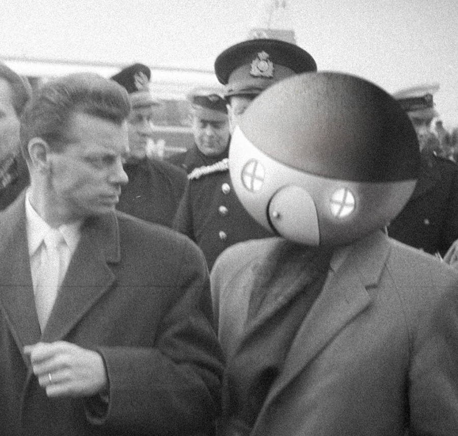

DECLASSIFIED INTEL DOSSIER: 'THE ROUNDERHOUSE'
KNOWN ALIASES: ROUNDERHOUSE (all caps important), Don Rounderhouse, Yurt
AGE:
OCCUPATION: Writer, international man of mystery, general hack.
AREAS OF ACTIVITY: SCP Wiki, Wanderer's Library, Twitter. Active to a lesser extent on Tumblr. All currently under surveillance.
NOTABLE SKILLS: Writer, amatuer artist and photo editor.
WANTED IN CONNECTION WITH: Grand larceny, starship theft, planning a heist, wire fraud, future crime, unlicensed use of fireworks, time travel without a permit, etc.
Hi! I'm ROUNDERHOUSE (all caps), an amatuer horror/scifi writer and creator. I'm 20, and I've been writing on the Internet for about 5 years now. I have a particular weakness for hard science fiction, space horror, historical stuff, and crime stories. As mentioned, most of my writing is on the SCP Wiki, where I'm happy to say it's found an enthusiastic home. I also make creepy/horror Photoshops sometimes, and I'm trying to draw more, expand my skillset.
There's not a whole lot to tell about me that I put out there, but thank you for visiting and being interested in my work. It means a lot. If you want to get into contact with me for writing commissions or just to chat, you can hit me up at
ROUNDERHOUSE.yurt@gmail.com or
my Twitter.